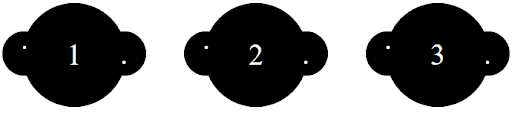

Pseudo Elements
OPDRACHT 6
de opdracht
Hieronder vind je wederom een voorbeeld van het gebruik van een pseudo-element. Kun jij dit namaken?

de uitvoering
de HTML
<div class="opdracht6">
<div class="bol">
<div class="dotleft">.</div>
<div class="nummer">1</div>
<div class="dotright">.</div>
</div>
<div class="bol">
<div class="dotleft">.</div>
<div class="nummer">2</div>
<div class="dotright">.</div>
</div>
<div class="bol">
<div class="dotleft">.</div>
<div class="nummer">3</div>
<div class="dotright">.</div>
</div>
</div>
de CSS
.opdracht6 {
position: relative;
display: flex;
align-items: center;
justify-content: center;
width: 420px;
height: 100px;
background-color: white;
}
.bol {
background-color: black;
border-radius: 50%;
display: inline-block;
position: relative;
width: 80px;
height: 80px;
margin-left: 30px;
margin-right: 30px;
text-align: center;
}
.nummer {
display: inline-block;
position: absolute;
vertical-align: middle;
line-height: 80px;
color: white;
font-family: 'Times New Roman', Times, serif;
font-size: 25px;
}
.bol::before {
content: '';
background-color: black;
border-radius: 50%;
position: absolute;
width: 40px;
height: 40px;
left: -20px;
top: 20px;
}
.bol::after {
content: '';
background-color: black;
border-radius: 50%;
position: absolute;
width: 40px;
height: 40px;
right: -20px;
top: 20px;
}
.dotleft {
position: absolute;
left: 0px;
top: 20px;
}
.dotright {
position: absolute;
right: 0px;
bottom: 26px;
z-index: 1;
}